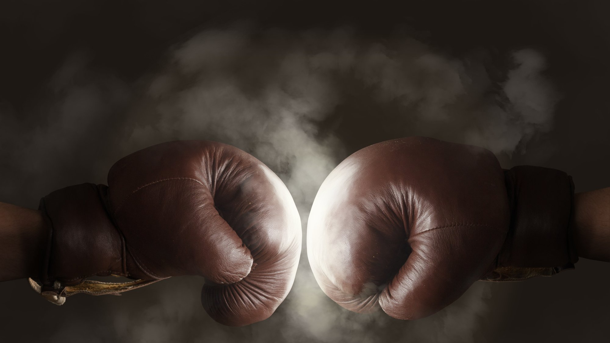
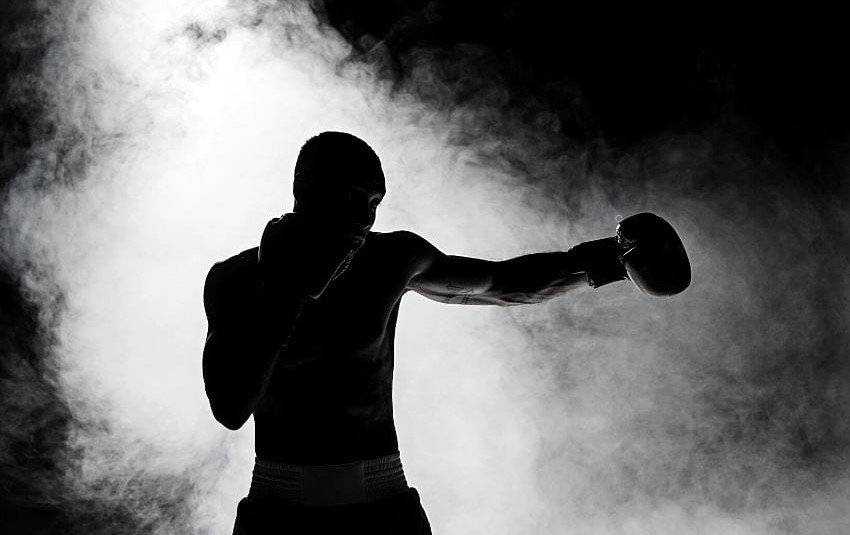
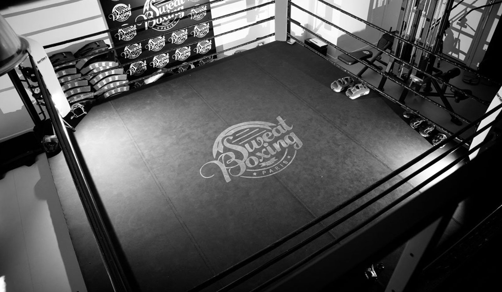
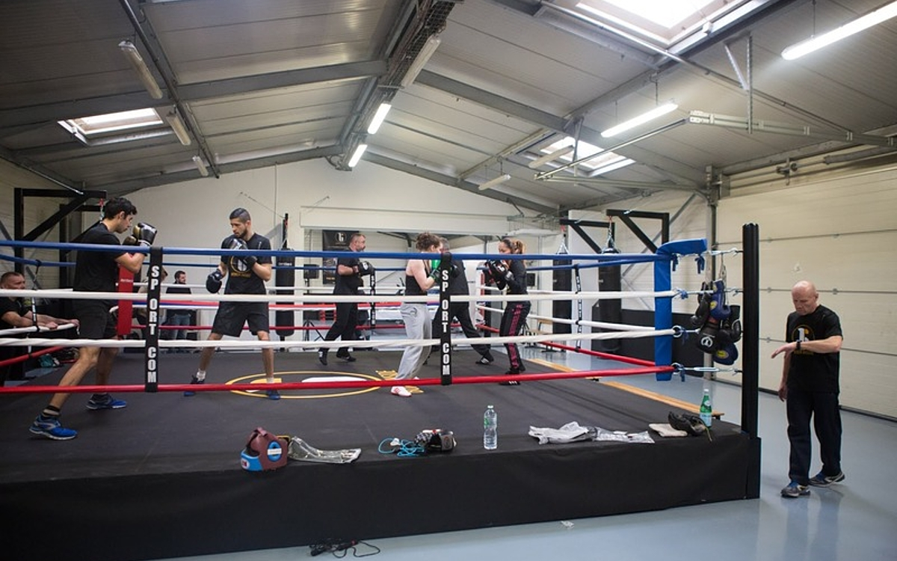
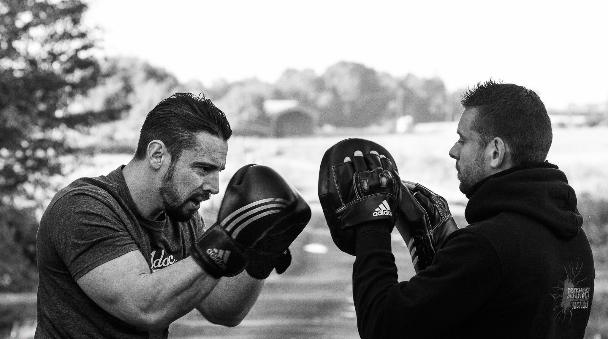

La boxe anglaise
Qu'est-ce que la Boxe anglaise ?
La boxe anglaise, aussi appelée le noble art, est un sport de combat dans lequel deux adversaires, de même catégorie de poids et de même sexe, se rencontrent sur un ring, munis de gants rembourrés afin de limiter le risque de coupure, et s'échangent des coups de poing, portés au visage et au buste.
Les sections en boxe
En France, la boxe anglaise se décline en 5 sections, JMB Club proposant la moins risquée, c'est-à-dire la boxe loisir: les contacts sont minimes et les compétitions interdites. Elle porte ainsi l'accent sur l'apprentissage des fondamentaux de la boxe et la forme physique.
Les techniques
Les techniques offensives
Cette boxe utilise plusieurs techniques de poing qui peuvent toucher : à la face ; sur le côté de la tête (mais pas à l'arrière) et au corps (de face ou de côté):
- Direct : coup de poing direct. Il est de forme pistonnée, fouettée ou balancée-jetée. Il existe des nuances. Ainsi, le jab est un direct à petite course donné avec le poing avant qui sert à tenir à distance l'adversaire alors que le lead est un direct à grande course et très lourd donné avec le poing arrière.
- Direct court : coup de poing dans l’axe exécuté sur le bas du buste adverse le pouce en haut et à mi-distance. Contrairement à l’uppercut utilisant la poussée des jambes et l’action de l’épaule, il s’exécute avec une activité plus prononcée du coude.
- Crochet : coup de poing circulaire (crocheté). Il existe d'autres formes de coups circulaires : le swing (appelé également stick-punch) et le half-swing.
- Uppercut : coup de poing remontant. Il est classé dans la catégorie des coups circulaires, ce qui n’est pas toujours le cas.
Les techniques défensives
La défense est un ensemble de comportements destinés à faire échec à l’offensive adverse. Cela comprend les blocages, les déviations, les esquives et les déplacements.
On distingue plusieurs objectifs de défense:
- La simple mise en sécurité de ses propres cibles (défense dite passive : couverture neutre, blocage neutre...) ;
- La réalisation d’actions destinées à utiliser l’activité adverse à son avantage (défense active). Le blocage déviant et la parade chassée réalisés dans le but de déséquilibrer ainsi que le blocage absorbant et l’esquive permettent au boxeur d'engager des ripostes ;
- La mise en difficulté de réalisations offensives adverses (par le raccourcissement ou l’augmentation de la distance, le verrouillage des armes adverses, la déstabilisation à base de techniques de menace, de leurre...).
Pourquoi faire de la Boxe anglaise ?
Même si ce n'est pas le scoop du siècle, rappelons avant tout que la boxe permet de se muscler, de s'affiner et d'apprendre à se défendre. Avec une pratique régulière on peut perdre rapidement de la masse graisseuse, tout en gagnant du muscle et de la force physique. Notre endurance et notre coordination sont décuplées, ce qui ne gâche rien. La boxe est aussi LE sport idéal pour se muscler les cuisses et travailler son cardio.
Enfin, la boxe anglaise fait autant de bien au corps qu'à l'esprit. Elle permet d'évacuer tout le stress et les tensions accumulées dans notre vie de tous les jours, de canaliser nos énergies négatives pour frapper et extérioriser nos émotions.
Rapidité, réflexes, précision, mental de gagnante sont nos meilleures armes pour progresser... La boxe s'adresse aux nerveuses, aux stressées, aux colériques, mais aussi aux timides et à celles qui manquent de confiance en soi. Car les poings serrés dans des gants en mousse, on laisse aux vestiaires nos complexes et nos frustrations pour combattre, dans tous les sens du terme, ce qui nous sépare de nos objectifs.
Boxe anglaise: L'essentiel pour bien commencer sa pratique
Pour bien commencer en boxe anglaise, il est essentiel de se procurer le matériel nécessaire pour frapper sans faire mal aux autres licenciés et pour se protéger d’éventuels « gros » coups. Le budget pour débuter la boxe anglaise est abordable, mais varie selon les marques choisies:
- Les gants de boxe : La paire gant de boxe est l’objet indispensable pour pratiquer la boxe. En tant que débutant, il n’y a pas forcément d’intérêt à dépenser beaucoup d’argent pour une paire de gants de boxe. Comptez entre 20€ et 80€ pour une paire gant de boxe.
Nous conseillons une taille de 12Oz (Oz correspondant au poids du rembourrage du gant, donc plus c'est élevé, mieux c'est.) - Les bandes : Pour éviter les multiples entorses aux poignets ou au pouce, il est important de se procurer des bandes. Elles gaineront vos poignets tout en absorbant la transpiration dans vos gants. Comptez 6 euros pour des bandes. Vous pouvez aussi utiliser des mitaines de maintien avec du gel. Les prix commencent à 15€.
- Le protège-dents : Le protège-dent est indispensable malgré le peu de risques dans notre salle. D’ailleurs, aucun entraîneur n’acceptera que vous vous entraîniez sans protège-dent. Nous vous conseillons d’acheter un protège-dent de qualité pour votre confort et pour le bien de vos dents. Vous pouvez compter entre 4€ et 25 euros pour des protège-dents.
Qui peut pratiquer la Boxe anglaise ?
Pour la boxe loisir, on peut enfiler ses gants de boxe et ses chaussures de boxe de 7 à 77 ans.
En voulant pratiquer la boxe, vous frappez à la bonne porte si vous avez pour objectif de :
- Gagner en confiance en soi: la pratique d’un sport de combat augmentera votre niveau de confiance en vous , ce qui peut grandement vous aider dans la vie de tous les jours.
- Apprendre à mieux gérer vos peurs
- De prendre conscience de votre potentiel: dans le sport et la boxe en particulier, il y aura des moments ou vous serez fatigué ou vous penserez avoir atteint vos limites, votre coach et vos partenaires seront la pour vous pousser et vous montrer que vous êtes bien plus fort(e) que vous ne pouvez l’imaginer.
- En quête de satisfaction personnelle: après une bonne séance de sport vous ressentirez une sensation de bien-être mélangée au plaisir du « travail accomplit », qui vous laissera un léger sourire. Puis, on est plus beau/belle quand on sourit donc profitons en.
Et pour finir, étant donné que la boxe loisir ne comporte pas de hauts risques car les cours sont axés sur les fondamentaux et la forme physique, tant que votre corps vous permet d'exercer des activités physiques, quelles qu'elles soient, alors ne vous privez pas, inscrivez-vous !
Quelles activités dans une séance type de Boxe anglaise ?
La première leçon de boxe est surtout l'occasion de se familiariser avec ce nouvel environnement plein de mystères. Ring, cordes à sauter, sacs de frappe, sparring-partners, coach... Puis, une fois échauffée et étirée, vous apprendrez à frapper sur un sac de frappe et à travailler votre jeu de jambes.
Enfin, vous pourrez entraîner face à face avec un partenaire (le fameux sparring-partner), qui vous apprendra à esquiver, à tenir votre garde, et être à l’affût de l'autre.
Les cours suivants varient en fonction de votre niveau et votre condition physique. Quoi qu'il arrive ils permettent de vous perfectionner et de vous faire gagner en confiance et en compétences.